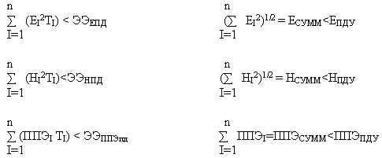
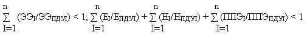

Государственная система санитарно-эпидемиологического нормирования Российской Федерации
Федеральные санитарные правила, нормы и гигиенические нормативы
2.2.4. ФИЗИЧЕСКИЕ ФАКТОРЫ ПРОИЗВОДСТВЕННОЙ СРЕДЫ
2.1.8. ФИЗИЧЕСКИЕ ФАКТОРЫ ОКРУЖЮЩЕЙ СРЕДЫ ЭЛЕКТРОМАГНИТНЫЕ ИЗЛУЧЕНИЯ РАДИОЧАСТОТНОГО ДИАПОЗОНА (ЭМИ РЧ)
Санитарные правила и нормы
СанПиН 2.2.4/2.1.8.055-96
Издание официальное
Госкомсанэпиднадзор России
Москва
1996
1. Разработаны:
Институтом медицины труда Российской Академии медицинских наук, Московским НИИ гигиены им. Ф.Ф.Эрисмана Госкомсанэпиднадзора России, Самарским отраслевым НИИ радио Минсвязи России.
2.Утверждены Постановлением Государственного комитета санитарно-эпидемиологического надзора Российской Федерации от 8 мая 1996 г. № 9
3. Введены взамен: Санитарных норм и правил при работе с источниками электромагнитных полей высоких, ультравысоких и сверхвысоких частот № 848-70;Временных санитарных норм и правил защиты населения от воздействия электрических полей, создаваемых радиотехническими объектами № 2963-84; Предельно допустимых уровней (ПДУ) воздействия электрических полей диапазона частот 0,06-30,0 мГц №4131-86; Санитарных норм дифференцированных по частоте предельно допустимых уровней для населения электромагнитного поля (ОВЧ диапазона волн), создаваемого телевизионными станциями № 4262-87; Предельно допустимых уровней (ПДУ) воздействия электрических полей диапазона средних и высоких частот для плавсостава судов № 3099-84; Санитарных норм комбинированных электромагнитных полей (10 см+0,8 см), создаваемых метеорологическими РЛС № 4561 –88; Санитарных норм комбинированных электромагнитных полей (10 + 3 см),создаваемых метеорологическими РЛС № 4257 – 87.
Государственный комитет санитарно-эпидемиологического надзора Российской Федерации
101479, Москва, Вадковский пер.,18/20
©Госкомсанэпиднадзора России
Закон РСФСР “О санитарно-эпидемиологическом благополучии населения”
“Санитарные правила, нормы гигиенические нормативы (далее-санитарные правила) –нормативные акты, устанавливающие критерии безопасности и (или) безвредности для человека факторов среды его обитания и требования к обеспечению благоприятных условий его жизнедеятельности.
Санитарные правила обязательны для соблюдения всеми государственными органами и общественными объединениями, предприятиями иными хозяйствующими субъектами, организациями и учреждениями, независимо от их подчиненности и форм собственности, должностными лицами и гражданами” (статья 3).
“Санитарным правонарушением признается посягающее на права граждан и интересы общества противоправное, виновное (умышленное или неосторожное) деяние (действие или бездействие), связанное с несоблюдением санитарного законодательства РСФСР, в том числе действующих санитарных правил…
Должностные лица и граждане РСФСР, допустившие санитарное правонарушение, могут быть привлечены к дисциплинарной, административной и уголовной ответственности” (статья 27).
УТВЕРЖДЕНО
Постановлением
Госкомсанэпиднадзора
России
от 8 мая 1996 г. № 9
СанПиН 2.2.4/2.1.8.055-96
Дата введения с момента утверждения.
2.2.4. ФИЗИЧЕСКИЕ ФАКТОРЫ ПРОИЗВОДСТВЕННОЙ СРЕДЫ
2.1.8. ФИЗИЧЕСКИЕ ФАКТОРЫ ОКРУЖАЮЩЕЙ СРЕДЫ ЭЛЕКТРОМАГНИТНЫЕ ИЗЛУЧЕНИЯ РАДИОЧАСТОТНОГО ДИАПАЗОНА (ЭМИ РЧ)
Санитарные правила и нормы
RADIOFREQUENCY ELEKTROMAGNETIC RADIATION (RF EMR) UNDER OCCUPATIONAL AND LIVING CONDITIONS
1.1Санитарные правила и нормы “Электромагнитные излучения радиочастотного диапазона (ЭМИ РЧ)” (далее санитарные правила) устанавливают предельно допустимые уровни (ПДУ) воздействия на людей электромагнитного излучения (ЭМИ РЧ) в диапазоне частот 30 кГц-300Ггци основные санитарно-гигиенические требования к разработке, изготовлению, приобретению и использованию источников ЭМИ РЧ в процессе работы, обучения, быта и отдыха людей.
1.2.Требования настоящих Санитарных правил обязательны также для дипломатических и иных представительств иностранных государств и международных организаций на территории Российской Федерации
1.3. Условия разработки, приобретения использования источников ЭМИ РЧ, нормально-техническая документация на источники ЭМИ РЧ должны быть приведены в соответствие с настоящими Санитарными правилами в сроки, определяемые по согласованию с органами и учреждениями государственного санитарно-эпидемиологического надзора.
Издание официальное
Настоящие Санитарные правила не могут быть полностью или частично воспроизведены, тиражированы и распространены без разрешения Госкомсанэпиднадзора России
2. Нормируемые параметры и единицы измерения.
2.1. Оценка воздействия ЭМИ РЧ на людей осуществляется по следующим параметрам:
2.1.1. По энергетической экспозиции, которая определяется интенсивностью ЭМИ РЧ и временем его воздействия на человека. Оценка по энергетической экспозиции применяется для лиц, работа или обучение которых связаны с необходимостью пребывания в зонах влияния источников ЭМИ РЧ (кроме лиц, не достигших 18 лет, и женщин в состоянии беременности) при поступлении на работу и положительного заключения по результатам медицинского осмотра.
2.1.2. По значениям интенсивности ЭМИ РЧ; Такая оценка применяется: для лиц, работа или обучение которых не связано с необходимостью пребывания в зонах влияния источников ЭМИ РЧ; для лиц не проходящих предварительных при поступлении на работу и периодических медицинских осмотров по данному фактору или при наличии отрицательного заключения по результатам медицинского осмотра; для работающих или учащихся лиц, не достигших 18 лет; для женщин в состоянии беременности; для лиц, находящихся жилых, общественных и служебных зданиях и помещениях, подвергающихся воздействию внешнего ЭМИ РЧ (кроме зданий и помещений передающих радиотехнических объектов); для лиц, находящихся на территории жилой застройки и в местах массового отдыха.
2.2. В диапазоне частот 30 кГц-300МГц интенсивность ЭМИ РЧ оценивается значениями напряженности электрического поля (Е.. В/м) и напряженности магнитного поля (Н.. А/м).
В диапазоне частот 300 МГц-300 ГГц интенсивность ЭМИ РЧ оценивается значениями плотности потока энергии (ППЭ. Вт/м2, мкВт/см2)
2.3 Энергетическая экспозиция (ЭЭ) ЭМИ РЧ в диапазоне частот 30 кГц-300 МГц определяется как произведение квадрата напряженности электрического или магнитного поля на время воздействия на человека.
Энергетическая экспозиция, создаваемая электрическим полем, равна ЭЭЕ=Е2*Т и выражается в (В/м)2*ч.
Энергетическая экспозиция, создаваемая магнитным полем, равна ЭЭН=Н2*Т и выражается в (А/м)2*ч
2.4. В случае импульсивно-модулируемых колебаний оценка проводится по средней за период следования импульса мощности источника ЭМИ РЧ и, соответственно, средней интенсивности ЭМИ РЧ.
3. Предельно допустимые уровни (ПДУ) воздействия ЭМИ РЧ на человека
3.1. В случаях, указанных в п. 2.1.1 настоящих Санитарных норм и правил, энергетическая экспозиция за рабочий день (рабочую смену) не должна превышать значений, указанных в таблице 3.1
.
Предельно допустимые значения энергетической экспозиции
|
Предельно допустимая энергетическая экспозиция |
|||
|
По электрической составляющей, (В/м)2*ч |
По магнитной составляющей, (А/м)2*ч |
По плотности потока энергии, (мкВт/см2)*ч |
|
|
30 кГц-3 МГц |
20000,0 |
200,0 |
- |
|
3-30 МГц |
7000,0 |
Не разработаны |
- |
|
30-50 МГц |
800,0 |
0,72 |
- |
|
50-300 МГц |
800,0 |
Не разработаны |
- |
|
300 МГц-300 ГГц |
- |
- |
200,0 |
Примечание: в настоящих Санитарных нормах и правилах во всех случаях при указании диапазонов частот каждый диапазон исключает нижний и включает верхний предел частоты.
3.2. Предельно допустимые значения интенсивности ЭМИ РЧ (Епду, Нпду, ППЭпду) в зависимости от времени воздействия в течение рабочего дня (рабочей смены) и допустимое время воздействия в зависимости от интенсивности ЭМИ РЧ определяются по формулам:
ЕПДУ=(ЭЭЕПД/Т)1/2 Т=ЭЭ/Е2
НПДУ=(ЭЭНПД/Т)1/2 Т=ЭЭ/Н2
ППЭПДУ=ЭЭППЭпд/Т Т=ЭЭППЭпд/ППЭ
3.3. Значения предельно допустимых уровней напряженности электрической (Епду) и магнитной (Нпду) составляющих в зависимости от продолжительности воздействия приведены в таблице 3.2.
Предельно допустимые уровни напряженности электрической и магнитной составляющих в диапазоне частот 30 кГц-300 МГц в зависимости от продолжительности воздействия
|
ЕПДУ, В/м |
НПДУ, А/м |
||||
|
0,03-3 МГц |
3-30 МГц |
30-300 МГц |
0,03-3 МГц |
30-50 МГц |
|
|
8.0 и более |
50 |
30 |
10 |
5,0 |
0,30 |
|
7,5 |
52 |
31 |
10 |
5,0 |
0,31 |
|
7,0 |
53 |
32 |
11 |
5,3 |
0,32 |
|
6,5 |
55 |
33 |
11 |
5,5 |
0,33 |
|
5,5 |
60 |
36 |
12 |
6,0 |
0,36 |
|
5,0 |
63 |
37 |
13 |
6,3 |
0,38 |
|
4,5 |
67 |
39 |
13 |
6,7 |
0,40 |
|
4,0 |
71 |
42 |
14 |
7,1 |
0,42 |
|
3,5 |
76 |
45 |
15 |
7,6 |
0,45 |
|
3,0 |
82 |
48 |
16 |
8,2 |
0,49 |
|
2,5 |
89 |
52 |
18 |
8,9 |
0,54 |
|
2,0 |
100 |
59 |
20 |
10,0 |
0,60 |
|
1,5 |
115 |
68 |
23 |
11,5 |
0,69 |
|
1,0 |
141 |
84 |
28 |
14,2 |
0,85 |
|
0,5 |
200 |
118 |
40 |
20,0 |
1,20 |
|
0,25 |
283 |
168 |
57 |
28,3 |
1,70 |
|
0,125 |
400 |
236 |
80 |
40,0 |
2,40 |
|
0,08 и менее |
500 |
296 |
80 |
50,0 |
3,00 |
Примечание: при продолжительности воздействия менее 0.08 часа дальнейшее повышение интенсивности не допускается.
3.4. Значения предельно допустимых уровней плотности потока энергии (ППЭ) в зависимости от продолжительности воздействия ЭМИ РЧ приведены в таблице 3.3.
Предельно допустимые уровни плотности потока энергии в диапазоне частот 300МГц-300ГГц в зависимости от продолжительности воздействия.
|
Продолжительность воздействия Т, ч |
ППЭПДУ, мкВт/см2 |
|
8.0 и более |
25 |
|
7,5 |
27 |
|
7,0 |
29 |
|
6,5 |
31 |
|
6,0 |
33 |
|
5,5 |
36 |
|
5,0 |
40 |
|
4,5 |
44 |
|
4,0 |
50 |
|
3,5 |
57 |
|
3,0 |
67 |
|
2,5 |
80 |
|
2,0 |
100 |
|
1,5 |
133 |
|
1,0 |
200 |
|
0,5 |
400 |
|
0,25 |
800 |
|
0,20 и менее |
1000 |
Примечание: при продолжительности воздействия менее 0.2 часа дальнейшее повышение интенсивности не допускается.
3.5. Для случаев облучения лиц, указанных в п. 2.1.1 настоящих Санитарных правил и норм. От антенн, работающих в режиме кругового обзора или сканирования с частотой не более 1 Гц и скважностью не менее 20, предельно допустимая интенсивность воздействия определяется по формуле:
ППЭПДУ=(К*ЭЭППЭпд)/Т,
где К - коэффициент ослабления биологической активности прерывистых воздействий, равный 10. Независимо от продолжительности воздействия интенсивность воздействия не должна превышать максимального значения, указанного в таблице 3.3.(1000мкВт/см2)
Не зависимо от продолжительности воздействия интенсивность воздействия не должна превышать максимальных значений, указанных в таблицах 3.2 и 3.3 (например, 1000мкВт/см для диапазона частот 300 МГц-300 ГГц)
3.6. Для случаев локального облучения кистей рук при работе с микрополосковыми СВЧ-устройствами предельно допустимые уровни воздействия определяются по формуле:
ППЭПДУ=(К1*ЭЭППЭпд)/Т,
где К –коэффициент ослабления биологической эффективности, равный 12.5.
При этом:
плотность потока энергии на кистях рук не должна превышать 5000мкВт/см2
3.7. Предельно допустимые уровни ЭМИ РЧ должны, как правило, определяться, исходя из предположения, что воздействие имеет место в течение всего рабочего дня (рабочей смены).
Сокращение продолжительности воздействия должно быть подтверждено технологическими, распорядительными документами и (или) результатами хронометража.
Применение повышенных допустимых значений интенсивности ЭМИ РЧ за счет сокращения продолжительности воздействия с учетом пп. 3.1-3.4 допускается только по согласованию местными учреждениями государственного санитарно-эпидемиологического надзора в тех случаях, когда все другие меры защиты от воздействия ЭМИ РЧ исчерпаны и не дали необходимого результата.
Предельно допустимое время работы вносится в инструкции по технике безопасности и в технологические документы, а на источниках ЭМИ РЧ или в непосредственной близости от них размещаются соответствующие предупреждения.
3.8. Нахождение персонала в местах, где интенсивность ЭМИ РЧ превышает допустимые уровни для минимальной продолжительности воздействия, разрешается только с использованием средств индивидуальной защиты.
3.9. Интенсивность ЭМИ РЧ на территории жилой застройки и местах массового отдыха, в жилых, общественных и производственных зданиях (внешнее ЭМИ РЧ, включая вторичное излучение) на рабочих местах лиц, не достигших 18 лет, и женщин в состоянии беременности не должна превышать значений, указанных в таблицах 3.4 и 3.5.
Предельно допустимые уровни ЭМИ РЧ для населения, лиц, не достигших 18 лет, и женщин в состоянии беременности
|
Диапазон частот |
|||||||
|
30 кГц-300 кГц |
0,3-3 МГц |
3-30 МГц |
30-300 МГц |
300-300ГГЦ |
|||
|
Предельно допустимые уровни ЭМИ РЧ |
|||||||
|
В/м |
В/м |
В/м |
В/м |
мкВт/см2 |
|||
|
Территория жилой застройки и мест массового отдыха; помещения жилых, общественных и производственных зданий (внешне ЭМИ РЧ, включая вторичное излучение): рабочего места лиц, не достигших 18 лет, и женщин в состоянии беременности |
25,0 |
15,0 |
10,0 |
3,0+ |
10,0 100,0++ |
||
+ - кроме телевизионных станций и радиолокационных станций, работающих в режиме кругового обзора или сканирования;
+ + -для случаев облучения от антенн, работающих в режиме кругового обзора или сканирования при выполнении условий, указанных в п. 3.5.
Таблица 3.5
Предельно допустимые уровни ЭМИ РЧ, создаваемых телевизионными станциями
|
№№ пп |
Частота, МГЦ |
ПДУ, В/м |
|
1 |
48,4 |
5,0 |
|
2 |
88,4 |
4,0 |
|
3 |
192,0 |
3,0 |
|
4 |
300,0 |
2,0 |
3.10. Интенсивность ЭМИ РЧ радиолокационных станций специального назначения (РЛС СН), предназначенных для контроля космического пространства и работающих в диапазоне частот 150 – 300 МГц в режиме электронного сканирования луча, на территории населенных мест, расположенной в ближней зоне диаграммы излучения РЛС СН, не должна превышать 10 мкВт/кв.см (6 В/м) и на территории населенных мест, расположенных в дальней зоне диаграммы излучения РЛС СН – 100 мкВт/кв.см (19 В/м).
Условия ближней зоны имеют место преимущественно на территории влияния РЛС СН типа “Днепр” (ближняя зона составляет 20 км).
Условия облучения населенных мест РЛС СН типа “Дарьял” соответствуют закономерностям дальней зоны и характеризуются высокими скважностями прерывистых воздействий от 400 до 5000, при этом суммарное время истинного облучения не превышает 4 минуты за сутки. Граница между ближней и дальней зонами на территории влияния РЛС СН типа “Дарьял” составляет 1.2 км.
Граница между ближней и дальней зонами диаграммы излучения РЛС СН определяется из соотношения
R=D2/
Где r – расстояние от источника ЭМИ, D – максимальный размер излучающей апертуры и длина волны излучения.
3.11. Воздействие на пациентов излучением медицинских аппаратов настоящими Санитарными правилами не регламентируется, поскольку уровни и продолжительность этого воздействия определяются необходимым лечебным эффектом.
3.12. При одновременном облучении от нескольких источников ЭМИ РЧ, для которых установлены одни и те же предельно допустимые уровни, должно соблюдаться следующие условия:

где ЕI –напряженность электрического поля, создаваемая источником ЭМИ под i –тым номером
НI –напряженность магнитного поля, создаваемая источником ЭМИ под i-тым номером
ППЭI –плотность потока энергии, создаваемая источником ЭМИ под i –тым номером
ТI –время воздействия i- того источника
n– количество источников ЭМИ.
3.13. При одновременном облучении от нескольких источников ЭМИ РЧ, для которых установлены разные предельно допустимые уровни, должны соблюдаться следующие условия:

где ЭЭI –энергетическая экспозиция i –того нормируемого диапазона
ЭЭПДУI –предельно допустимое значение энергетической экспозиции i –того нормируемого диапазона:
Е –предельно допустимое значение напряженности электрического поля i –того нормируемого диапазона:
Н – предельно допустимое значение напряженности магнитного поля i –того нормируемого диапазона:
ППЭ предельно допустимое значение плотности потока энергии i –того нормируемого диапазона:
n – количество нормируемых диапазонов.
4. Требования к источникам ЭМИ РЧ
4.1. Выпускаемая на территории Российской Федерации и ввозимая из-за границы продукция должна обеспечивать выполнение требований настоящих Санитарных норм и правил.
4.2. выпуск на территории Российской Федерации и ввоз из-за границы источников ЭМИ РЧ допускается только с разрешения Государственного комитета санитарно-эпидемиологического надзора Российской Федерации или соответствующего центра государственного санитарно-эпидемиологического надзора в республике (республик в составе Российской Федерации), крае, области, городах Москве и Санкт-Петербурге (за исключением, установленными настоящими Санитарными правилами и нормами).
4.3. Не подлежат контролю в соответствии с настоящими Санитарными нормами и правилами
4.3.1. Используемые в условиях производства источники ЭМИ РЧ, если они не работают на открытый волновод, антенну или другой элемент, предназначенный для излучения в пространство, и их максимальная высокочастотная мощность согласно паспортным данным не превышает:
5 Вт – в диапазоне частот 30 кГц – 3 МГц:
2 Вт – в диапазоне частот 3-30 МГц:
0,2 Вт – в диапазоне 30 МГц - 300 ГГц.
4.3.2. Бытовое оборудование и приборы, носимые радиопередающие средства, источники ЭМИ РЧ, используемые на рабочих местах лиц, не достигших 18 лет, и женщин в состоянии беременности, если их номинальная высокочастотная мощность не превышает:
1 Вт – в диапазоне частот 30кГц – 3 МГц;
0,5 Вт – в диапазоне частот 3 – 30 МГц;
0,05 вт – в диапазоне частот 30 МГц –300 ГГц.
4.4. Порядок выдачи разрешений органов и учреждений государственного санитарно-эпидемиологического надзора на производство (ввоз), реализацию и применение продукции определяется Госкомсанэпиднадзором России.
Производство (ввоз), реализация и применение продукции, не имеющей
соответствующих разрешений, запрещается.
4.5. Организация испытаний продукции, исследований интенсивности ЭМИ РЧ, как и других гигиенически значимых показателей и характеристик продукции, разработка необходимых мер безопасности является обязательностью разработчика (производителя, продавца) продукции.
4.6. В нормативной и эксплуатационной документации на продукцию должна содержаться следующая информация:
в нормативной документации: четко определенные область и условия применения продукции; гигиенически значимые показатели и характеристики продукции (виды и допустимые уровни воздействия на человека неблагоприятных факторов, источником которых является образец продукции); правила и методы контроля гигиенически значимых показателей и характеристик продукции; правила приемки, обеспечивающие достоверное установление соответствия фактических уровней вредных факторов допустимым:
в эксплуатационной документации: область и условия применения продукции; гигиенически значимые показатели и характеристики продукции (фактические уровни воздействия на человека); меры безопасности при применении продукции, обеспечивающие безопасность ее для человека; меры первой помощи в случае острого заболевания (при необходимости); номер гигиенического сертификата (заключения), дата его выдачи и срок действия.
4.7. В случае необходимости на лицевые панели (поверхности) продукции должны наноситься соответствующие предупреждающие надписи.
5. Требования к размещению источников ЭМИ РЧ в производственных условиях.
5.1. Источники ЭМИ РЧ должны размещаться в производственных помещениях с учетом недопустимости повышенного электромагнитного воздействия на соседние рабочие места, помещения, здания и прилегающие территории.
5.2. Площадь, кубатура производственных помещений, вентиляция, освещенность, уровни физических, химических и иных факторов, другие гигиенические показатели и характеристики должны соответствовать установленным для этих показателей санитарным правилам и нормам.
6. Требования к размещению передающих радиотехнических объектов (ПРТО)
6.1. Размещение и ввод в эксплуатацию ПРТО (кроме работающих в движении) – радиолокационных, радиопередающих, телевизионных, радиорелейных станций, земных станций спутниковой связи, других объектов, предназначенных для излучения электромагнитной энергии в окружающее пространство, специальных полигонов (в т. ч. заводских) для испытания указанных объектов в штатном режиме допускается только с разрешения соответствующего центра государственного санитарно-эпидемиологического надзора в республике (республик в составе Российской Федерации), крае, области, городах Москве и Санкт-Петербурге.
Рассмотрение всех вопросов, связанных с размещением и вводом ПРТО В эксплуатацию осуществляется специализированными подразделениями надзора за источниками неионизирующих излучений вышеуказанных учреждений государственного санитарно-эпидемиологического надзора с участием, при необходимости, других специалистов этих учреждений.
Рассмотрение всех вопросов по специальным объектам Министерства обороны, Министерства внутренних дел и органов безопасности проводится при участии специализированных подразделений медицинских служб этих ведомств.
6.2. Не подлежит согласованию с учреждениями государственного санитарно-эпидемиологического надзора размещение ПРТО, имеющих антенны с коэффициентом направленного действия не более 5, установленные вне здания (в т. ч. на крышах), и максимальную мощность, не превышающую следующих значений:
40 Вт – в диапазоне частот 30 кГц – 3 МГц,
20 Вт - в диапазоне частот 3 – 30 МГц,
2 Вт - в диапазоне частот 30 МГц - 300ТГц.
6.3. ПРТО должны размещаться с учетом предотвращения создания на открытой территории и в зданиях интенсивности ЭМИ РЧ, превышающей предельно допустимое значение. Рекомендуется передающие радиотехнические объекты размещать в максимально возвышенных по отношению к остальной местности местах.
6.4. На технической территории ПРТО и специальных полигонов не допускается размещение жилых и общественных зданий.
6.5. Допускается размещение антенн на крышах жилых, общественных и других зданий, если при этом внутри зданий и на прилегающей территории интенсивность ЭМИ РЧ не превышает предельно допустимых значений.
6.6. В целях защиты населения от воздействия ЭМИ РЧ, создаваемых ПРТО, устанавливаются санитарно-защитные зоны ограничения застройки.
6.7. Санитарно защитной зоной является площадь, примыкающая к технической территории ПРТО. Внешняя граница санитарно-защитной зоны определяется на высоте 2 м от поверхности земли по ПДУ ЭМИ РЧ, указанным в таблицах 3.4. 3.5 и в п. 3.10.
6.8 Санитарно-защитная зона устанавливается с учетом перспективного развития объекта и населенного пункта и отсчитывается от антенны.
6.9. Зоной ограничения является территория, где на высоте более двух метров от поверхности земли интенсивность ЭМИ РЧ превышает ПДУ, указанные в таблице 3.4. 3.5 и п. 3.10. Внешняя граница зоны ограничения определяется по максимальной высоте зданий перспективной застройки, на высоте верхнего этажа которых интенсивность ЭМИ РЧ не превышает ПДУ.
На резко пересеченной местности могут возникать участки, не прикасающиеся с территорией ПРТО, на которых интенсивность ЭМИ РЧ превышает ПДУ, и, следовательно, по этим участкам могут устанавливаться санитарно – защитные зоны и зоны ограничения.
6. 10. Санитарно – защитная зона и зона ограничения определяются расчетным путем и уточняются путем измерений интенсивности ЭМИ РЧ. Обязанность проведения (организации) расчетов и измерений лежит на владельце ПРТО.
6. 11. Для ПРТО, имеющих направленные или сканирующие в определенном секторе антенны, санитарно – защитные зоны и зоны ограничений устанавливаются в направлении излучения электромагнитной энергии с учетом ширины диаграммы направленности, а также боковых и задних лепестков.
Для ПРТО, имеющих антенны кругового обзора или ненаправленного действия, санитарно – защитные зоны и зоны ограничений устанавливаются по кругу.
6. 12. Для ПРТО, антенны которых излучают электромагнитную энергию под определенным углом к горизонту и интенсивность ЭМИ РЧ изменяется в зависимости от высоты, зона ограничений устанавливается дифференцировано по вертикали в пределах высоты существующей и перспективы жилой застройки.
6. 13. Для снижения степени облучения селитебных территорий, уменьшения размеров санитарно – защитных зон и зон ограничений ПРТО следует устанавливать на естественных возвышенностях, на эстакадах и т. п., максимально ограничивая использование отрицательных углов максимального излучения антенн.
6. 14. Планировка и застройка в зоне действующих и проектных ПРТО должна осуществляться с учетом границ санитарно – защитной зоны и зоны ограничений.
6. 15. В санитарно – защитной зоне ограничений запрещено строительство жилых зданий всех видов, стационарных лечебно – профилактических и санитарно – курортных учреждений, детских дошкольных учреждений, средних учебных заведений всех видов, интернатов всех видов и других зданий, предназначенных для круглосуточного пребывания.
6.16. При необходимости защиты общественных и производственных зданий от ЭМИ РЧ следует предусматривать выполнение ограждающих конструкций и кровли из материалов с высокими радиоэкранирующими свойствами (железобетон и др.) или покрытие ограждающих конструкций защитной металлической сеткой.
6.17. Следует учитывать необходимость защиты от воздействия вторичного ЭМИ РЧ, переизлучаемого элементами конструкции здания, коммуникациями, внутренней проводкой и т. д. При необходимости системы отопления и другие элементы коммуникаций и сетей следует закрывать диэлектрическими (деревянными и т. п.) коробками, препятствующими непосредственному доступу к этим элементам. Необходимое расстояние между элементом коммуникаций и сетей и коробом определяются путем измерения интенсивности ЭМИ РЧ.
6.18. Каждый ПРТО (за исключением указанных в п. 6.2) должен иметь санитарный паспорт, содержащий следующие данные:
6.19.1. Наименование владельца ПРТО, его принадлежность (подчиненность и почтовый адрес.
6.19.2. Наименование ПРТО, место его расположения (адрес) и год ввода в эксплуатацию.
6.19.3. Сведения о реконструкции объекта.
6.19.4. Ситуационный план ПРТО с указанием санитарно-защитной зоны и зоны ограничений.
6.19.5. Мощность каждого передатчика и их количество; рабочие частоты (диапазоны частот) по каждому передатчику; тип модуляции; для объектов, работающих в импульсном режиме – импульсная мощность, длительность и частота (период) следования импульсов.
6.19.6. Сведения по каждой антенне: тип, коэффициент направленного действия (или усиления), угол (диапазон углов) максимального излучения в горизонтальной и вертикальной плоскостях, диаграммы направленности в горизонтальной и вертикальной плоскостях, с каким передатчиком работает данная антенна.
6.19.7. Время и режим работы ПРТО на излучение.
6.19.8. Материалы расчета распределения интенсивности ЭМИ РЧ на прилегающей к ПРТО территории.
6.19.9. Результаты измерений интенсивности ЭМИ РЧ.
6.19.10. Заключение (выводы) центра государственного санитарно-эпидемиологического надзора.
Акты, протоколы обследований, предписания учреждения государственного санитарно-эпидемиологического надзора приобщаются к санитарному паспорту.
6.20. Санитарный паспорт составляется владельцем (администрацией) ПРТО, подписывается его владельцем (руководителем) и согласовывается руководителем специализированного подразделения надзора за источниками неионизирующих излучений учреждения государственного санитарно-эпидемиологического надзора, указанного в п. 6.1
Санитарный паспорт составляется в двух экземплярах, один из которых хранится непосредственно на ПРТО, а другой в специализированном подразделении надзора за источниками неионизирующих излучений соответствующего учреждения государственного санитарно-эпидемиологического надзора.
6.21. Для специальных ПРТО по просьбе их руководителей санитарный паспорт может составляться в одном экземпляре, хранящемся на ПРТО. В этом случае в учреждении государственного санитарно-эпидемиологического надзора хранится выписка из санитарного паспорта, содержащая ситуационный план с указанием границ санитарно-защитной зоны и зоны ограничений с соответствующими пояснениями. Санитарный паспорт предъявляется по первому требованию должностных лиц учреждений государственного санитарно-эпидемиологического надзора.
6.22. Внесение в условия и режим работы ПРТО каких-либо изменений, ухудшающих электромагнитную обстановку, без согласования с соответствующим учреждением государственного санитарно-эпидемиологического надзора запрещается.
Постоянное уменьшение мощности излучения, демонтаж и окончательный вывод из работы передатчиков и антенн согласования не требует, но об этом владелец (руководитель) объекта направляет информацию в соответствующее учреждение государственного санитарно-эпидемиологического надзора.
Необходимые изменения вносятся в санитарный паспорт объекта или оформляются в виде приложения к нему.
6.23. Предусмотренные настоящим разделом требования обязательны также для передающих радиотехнических средств, установленных на транспортных средствах (летательных аппаратах, морских и речных судах, поездах) при работе на постоянных стоянках (аэродромах, портах и пристанях, вокзалах и т. п.). При этом санитарный паспорт составляется в целом на объект базирования транспортных средств.
7. Меры защиты работающих от воздействия ЭМИ РЧ
7.1. Защита персонала от воздействия ЭМИ РЧ осуществляется путем проведения организационных и инженерно-технических мероприятий, а также использования средств индивидуальной защиты.
К организационным мероприятиям относятся: выбор рациональных режимов работы оборудования; ограничение места и времени нахождения персонала в зоне воздействия ЭМИ РЧ (защита расстоянием и временем) и т. п.
Инженерно-технические мероприятия включают: рациональное размещение оборудования; использование средств, ограничивающих поступление электромагнитной энергии на рабочие места персонала (поглотители мощности, экранирование, использование минимальной необходимой мощности генератора); обозначение и ограждение зон с повышенным уровнем ЭМИ РЧ.
К средствам индивидуальной защиты относятся: защитные очки, щитки, шлемы, защитная одежда (комбинизоны, халаты и т. д.)
Способы защиты в каждом конкретном случае должен определяться с учетом рабочего диапазона частот, характера выполняемых работ, необходимой эффективности защиты.
7.2. Работа с источниками ЭМИ РЧ при снятых заводских экранах запрещается (за исключением ремонта, настройки, регулировки и т.п.).
7.3. Испытание установок с излучением на антенну при использовании штатных мощных передатчиков должно проводиться на специальных полигонах. При необходимости проведения указанных испытаний в помещениях цехов или на территории предприятия должны быть приняты меры, исключающие превышение ПДУ ЭМИ РЧ за пределами цеха (территории) и на рабочих местах предприятия. В период работы установок с излучением на антенну необходимо предусмотреть звуковую и световую сигнализацию.
7.4. Экранирование источников ЭМИ РЧ или рабочих мест осуществляется с помощью отражающих или поглощаюших экранов (стационарных или переносных). Отражающие экраны выполняются из металлических листов, сетки, ткани с микропроводом и др. (приложение 3).
В поглощающих экранах используются специальные материалы, обеспечивающие поглащение излучения соответствующей длины волны. В зависимости от излучаемой мощности и взаимного расположения источника и рабочих мест конструктивное решение экрана может быть различным (замкнутая камера, щит, чехол, штора и т. д.).
7.5. При изготовлении экрана в виде замкнутой камеры вводы волноводов, коаксиальных фидеров, воды, воздуха, выводы ручек управления и элментов настройки не должны нарушать экранирующие свойства камеры.
7.6. Экранирование смотровых окон, приборных панелий проводится с помощью радиозащитного стекла. Для уменьшения просачивания электромагнитной энергии через вентиляционные жалюзи последние экранируются металлической сеткой, либо выполняются в виде запредельных волноводов.
7.7. Уменьшение утечек энергии из фланцовых сочленений волноводов достигается путем применения “дроссельных фланцев”, уплотнения сочленений с помощью прокладок из проводящих (фосфористая бронза, медь, алюминий, свинец и другие металлы) и поглощающих материалов, осуществления дополнительного экранирования.
7.8. Средства индивидуальной защиты следует использовать в случаях, когда снижение уровней ЭМИ РЧ с помощью общей защиты технически невозможно. Если защитная одежда изготовлена из материала, содержащего в своей структуре металлический провод, она может использоваться только в условиях, исключающих прикосновение к открытым токоведущим частям установок.
7.9. При работе внутри экранированных помещений (камер) стены, пол и потолок этих помещений должен быть покрыты радиопоглощающими материалами. В случае направленного излучения допускается применение поглощаюших покрытий только на соответствующих участках стен, потолка, пола.
В тех случаях, когда уровни ЭМИ РЧ на рабочих местах внутри экранированного помещения превышают ПДУ, персонал должен выводиться за пределы камер с организацией дистанционного управления аппаратурой.
7.10. Служебные помещения на территории ПРТО следует размещать преимущественно в зоне “радиотени” с ориентацией окон и дверей в сторону противоположную от источников ЭМИ РЧ.
7.11. Маршруты движения персонала по территории ПРТО должны устанавливаться таким образом, чтобы исключить возможность облучения людей при уровнях, превышаюших предельно допустимые. Зоны с уровнями ЭМИ РЧ выше допустимых должны быть обозначены специальными предупреждающими знаками и надписями.
8. Лечебно-профилактические мероприятия.
8.1. В целях предупреждения, ранней диагностики и лечения нарушений в состоянии здоровья работники, связанные с воздействием ЭМИ РЧ должны проходить предварительные при поступлении на роботу и периодические медицинские осмотры в порядке, установленном соответствующим приказом Министерства здравоохранения.
8.2. Работники не проходят медицинских осмотров, если уровни ЭМИ РЧ на рабочих местах не превышают допустимых значений, указанных в таблицах 3.4, 3.5 и в п. 3.10.
8.3. Все лица с начальными проявлениями клинических нарушений, обусловленных воздействием ЭМИ РЧ (астенический, астено-вегетативный, гипоталамический синдром), а также с общими заболеваниями, течение которых может усугубляться под влиянием неблагоприятных факторов производственной среды (органические заболевания центральной нервной системы, болезни крови и др.) должны браться под наблюдение с проведением соответствующих гигиенических и терапевтических мероприятий, направленных на оздоровление условий труда и восстановление состояния здоровья работающих.
8.4 Временный или постоянный перевод работающих на другую работу осуществляется в случаях, характеризующихся прогрессирующим течением или выраженными формами профессиональной патологии или усугубляющимися в результате воздействия ЭМИ РЧ общими заболеваниями. Переводу на другую работу подлежат также женщины в период беременности и кормления.
8.5 Лица, не достигшие 18 лет, и женщины в состоянии беременности допускаются к работе на установках, являющихся источниками ЭМИ РЧ, только в случаях, когда интенсивность ЭМИ РЧ на рабочих местах не превышает значений, указанных в таблицах 3.4 и 3.5.
(обязательное)
ТРЕБОВАНИЯ К ПРОВЕДЕНИЮ КОНТРОЛЯ ИНТЕНСИВНОСТИ ЭМИ РЧ
1.Требование к средствам измерения
1.1Измерения интенсивности ЭМИ РЧ должны проводится приборами, прошедшими в установленном порядке метрологическую аттестацию и имеющими действующее свидетельство о поверке.
1.2 Для измерений в диапазоне частот 30 кГц -300 мГц используются приборы, предназначенные для определения среднеквадратичного значения напряженности электрического и магнитного полей, с допустимой относительной погрешностью 30 %.
Для измерений в диапазоне частот 0,3 –300 ГГц используются приборы, предназначенные для определения среднего значения плотности потока энергии, с допустимой погрешностью 30 %.
Для проведения измерений следует отдавать предпочтение приборам с изотропными датчиками.
2. Выбор точек контроля.
2.1. В производственных условиях измерения должны проводиться на постоянных рабочих местах персонала. При отсутствии постоянных рабочих мест выбирается несколько точек в пределах рабочей зоны, в которой работник проводит не менее 50 % рабочего времени. Кроме того, измерения проводятся в местах возможного нахождения персонала в процессе работы.
2.2. При измерениях плотности потока энергии приборами с антеннами направленного действия, предназначенными для работы в дальней зоне излучения, антенны приборов не должны приближаться к месту выхода энергии на расстоянии, меньшее чем rmin= d2/?,где d –наибольший„геометрический„ра}мер„приемной„ан{енны „?„pдли}аuволны„излуче}ия„Ђ„2.3. При измерениях электрической составляющей ЭМИ РЧ прибором NFM-1 или аналогичным необходимо соблюдать минимальное расстояние между дипольной антенной прибора и металлическими поверхностями (предметами), равное 50 см. При меньших расстояниях резко возрастает погрешность измерений.
2.4. При проведении измерений интенсивности ЭМИ РЧ в помещениях жилых и общественных зданий (внешнее излучение, включая вторичное) измерения проводятся в центре помещений, у окон, у батарей отопления и других коммуникаций, а также, при необходимости, в других точках.
2.5. Измерения внешнего излучения при отсутствии кондиционирования воздуха проводятся при открытой форточке, фрамуге или узкой створке окна.
2.6. На открытой территории измерения проводятся на высоте 2 м от поверхности земли, далее на высотах 3, 6, 9 метров и т.д. в зависимости от этажности застройки с использованием, при необходимости, подъемных устройств.
2.7. При наличии в структуре центра госсанэпиднадзора специализированного подразделения неионизирующих излучений выбор точек осуществляется специалистом этого подразделения с участием, при необходимости, специалистов других подразделений.
3. Проведение измерений.
3.1. Измерения в каждой точке проводятся на высоте 0.5, 1.0 и 1.7 м от пола (опорной поверхности). Определяющем в данной точке является максимальное измеренное значение интенсивности ЭМИ РЧ.
3.2. Измерения интенсивности ЭМИ РЧ от антенн с вращающейся или сканирующей диаграммой направленности должны проводиться при неподвижной диаграмме направленности.
3.3. При одновременной работе источников ЭМИ РЧ, излучающих в диапазонах частот с разными гигиеническими нормативами, измерения должны проводиться раздельно в каждом диапазоне частот (при отсутствии приборов, позволяющих выделить каждый диапазон частот).
3.4 ПРИ проведении измерений лицо, проводящее измерения, и другие лица не должны находиться между источником излучения и приемной антенной.
3.5. Приборы для измерения интенсивности ЭМИ РЧ используются в соответствии с инструкциями по их эксплуатации.
3.6. Результаты измерения оформляются протоколом. Формы протоколов могут утверждаться государственным санитарным врачом по республике (республик в составе Российской Федерации), краю, области, городам Москве и Санкт-Петербургу. В протоколе обязательно должны содержаться следующие данные:
номер и дата протокола;
наименование и адрес объекта (предприятия, учреждения, организации, территории),наименование подразделений (помещений);
наименование и основные технические характеристики источников ЭМИ РЧ (частота или диапазон частот, максимальная и используемая мощность, заводской номер, год выпуска, режим генерации, время работы на излучение и подтверждающие документы);
описание излучающих элементов;
наименование и краткое описание технологического процесса;
описание точек измерений с эскизом (при необходимости);
описание применяемых средств защиты;
результаты измерений
наименование и заводские номера средств измерений, номера и срок действия свидетельств о поверке
краткое заключение (выводы) о соответствии или несоответствии условий работы (обучения, быта, отдыха) с источниками ЭМИ РЧ санитарно-гигиеническим требованиям с указанием нормативного документа
подписи лица, проводившего измерения, и руководителя специализированного подразделения центра госсанэпиднадзора.
3.7. Измерения интенсивности ЭМИ РЧ должны проводиться:
не реже одного раза в год в порядке текущего контроля;
при внесении в условия и режимы работы источников ЭМИ РЧ изменений влияющих на уровни излучения (замена генераторных и излучающих элементов, изменение технологического процесса, изменение экранировки и средств защиты, увеличение мощности, изменения расположения элементов и т.д.);
после ремонта источников ЭМИ РЧ.
3.8. В зависимости от результатов динамического наблюдения за интенсивностью ЭМИ РЧ, создаваемой конкретными источниками, периодичность проведения измерений может быть увеличена по согласованию с соответствующим центром госсанэпиднадзора, но не более чем до 3 лет.
3.9. Обязанность обеспечения проведения контрольных измерений лежит на владельцах источников ЭМИ РЧ.
3.10. При неизвестности источника ЭМИ РЧ, отсутствии сведений о диапазоне рабочих частот и режимах работы измерения интенсивности ЭМИ РЧ не проводятся.
3.11. Рассчет и измерение интенсивности ЭМИ РЧ от передающих радиотехнических объектов необходимо осуществлять в соответствии с методическими указаниями, утвержденными Госкомсанэпиднадзором России в установленном порядке.
(рекомендуемое)
ОСНОВНЫЕ ХАРАКТЕРИСТИКИ ПРИБОРОВ, РЕКОМЕНДУЕМЫХ ДЛЯ ИЗМЕРЕНИЯ ИНТЕНСИВНОСТИ ЭМИ РЧ.
|
Тип |
Основная характеристика |
Рабочий диапазон частот |
Пределы измерения |
Погрешность |
|
ПЗ-21 заменяет ПЗ-16 |
Измеритель напряженности поля с изотропными датчиками |
Е: 10 кГц – 300 МГц; Н: 100 кГц – 30 МГц |
Е: 1 – 1000 В/м; Н: 0,5 – 16 А/м |
Не более 2,5 дБ |
|
ПЗ-22 заменяет ПЗ–15, ПЗ-16, ПЗ-17 |
Измеритель напряженности поля |
Е и Н: 10 кГц – 300 МГц |
E: 1 – 3000 В/м; H: 0,3 –500 А/м |
Не более 2,5 дБ |
|
ПЗ-23 |
Изменение плотности потока энергии |
37,5 – 118 ГГц |
0,5 – 2000 мкВт/см2 |
То же |
|
ПЗ-22/1 |
Измеритель напряженности поля |
Е: 0.01 – 300 МГц Н: 0.01 – 50 МГц |
Е: 1 – 1000 В/м Н: 0,3 – 60 А/м |
То же |
|
ПЗ-22/2 |
Измеритель напряженности поля |
Е: 0.01 – 300 МГц Н: 0.01 – 30 МГц |
Е: 30 – 3000 В/м Н: 2 - 500 А/м |
То же |
|
ПЗ-22/3 |
Измеритель напряженности поля |
Е: 0,01 – 1000 МГц Н: 0.01 – 300 МГц |
Е: 1 – 100 В/м Н: 0,1 – 40 А/м |
То же |
|
ПЗ-22/4 |
Измеритель напряженности поля |
Е: 0,01 – 300 МГц Н: 0.01 – 300 МГц |
Е: 1 – 3000 В/м Н: 0,1 – 500 А/м |
То же |
|
ПЗ-18, ПЗ-19, ПЗ-20 |
Изменение плотности потока энергии |
0,3 – 39,65 ГГц |
0,32 мкВт/кв. см – 100 мВт/кв.см |
То же |
(рекомендуемое)
ЭКРАНИРУЮЩИЕ МАТЕРИАЛЫ ДЛЯ ИЗГОТОВЛЕНИЯ СРЕДСТВ ЗАЩИТЫ ОТ ЭМИ РЧ В ДИАПАЗОНЕ ЧАСТОТ 30 МГц – 40 ГГц
Эффективность экранирующих устройств определяется электрическими и магнитными свойствами материала экрана, конструкцией экрана, его геометрическими размерами и частотой излучения.
Для уменьшения ЭМИ РЧ защитные устройства должны представлять собой электрически и магнитно-замкнутый экран.
|
Наименование материала |
ГОСТ, ТУ |
Толщина, мм |
Диапазон частот, Гц |
Ослабление, дБ |
|
Листовая Ст3 |
ГОСТ 19903-74 |
1,4 |
30 МГц-40 МГц |
100 |
|
Фольга алюминиевая |
ГОСТ 618-73 |
0,08 |
“ – “ |
80 |
|
Фольга медная |
ГОСТ 5638-75 |
0,08 |
“ – “ |
80 |
|
Сетка стальная тканая |
ГОСТ 5336-73 |
0,3-1,3 |
“ – “ |
30 |
|
Радиозащитное стекло с одно - или двухсторонним полупроводниковым покрытием |
ТУ 21-54-41-73 |
6 |
30 МГц – 30 ГГц |
20-40 |
|
Ткань хлопчатобумажная с микропроводом |
ГОСТ 17-28-70 |
- |
“ – “ |
20-40 |
|
Ткань металлизированная “Восход” |
- |
- |
10 кГц-30 ГГц |
40-65 |
|
Ткань трикотажная (полиамид + проволока) |
ТУ 6-06-0202-90 |
- |
300 кГц-30 МГц |
15-40 |
Примечание: на основе экранирующих материалов изготовлены средства индивидуальной защиты очки защитные с металлизированными стеклами ОРЗ – 5, ТУ 64 – 1- 2717 – 81 щитки защитные лицевые ГОСТ 12 4 023 – 84.
(справочное)
Перечень методик расчета интенсивности электромагнитных излучений, создаваемых передающими радиотехническими объектами
1. Методические указания. Определение уровней электромагнитного поля, границ санитарно-защитной зоны и зон ограничения застройки в местах размещения передающих средств радиовещания и радиосвязи кило- , гекто- и декаметрового диапазонов. МУК 4.3.044 – 96 от 02. 02. 96. Госкомсанэпиднадзор России. 1996.
2. Методические указания. Определение уровней электромагнитного поля в местах размещения передающих средств и объектов сухопутной подвижной радиосвязи ОВЧ и УВЧ диапазонов. МУК 4. 3. 046 – 96 от 02. 02. 96. Госсанэпиднадзор России. 1996.
3. Методические указания. Определение уровней электромагнитного поля в местах размещения средств телевидения и ЧМ – радиовещания. МУК 4. 3. 045 –96 от 02. 02. 96. Госкомсанэпиднадзор. России. 1996.
4. Методические указания. Определение плотности потока мощности электромагнитного поля в местах размещения радиосредств, работающих в диапазоне частот 700 мГц – 30 гГц. МУК 4. 3. 043 – 96 от 02. 02. 96. Госкомсанэпиднадзор России 1996.
5. Методические рекомендации “Расчетные методы оценки уровней СВЧ электромагнитных излучений на радиотехнических объектах”. М. Минобороны. 1987.
6. В. Я. Ицков. Электромагнитные поля в окрестности радиотехнических станций. В сб. ‘’Электромагнитные поля в биосфере’’. Т. 1. ‘’Электромагнитные поля в атмосфере Земли и их биологическое значение’’.Сс. 101 – 103. М.Наука, 1994.